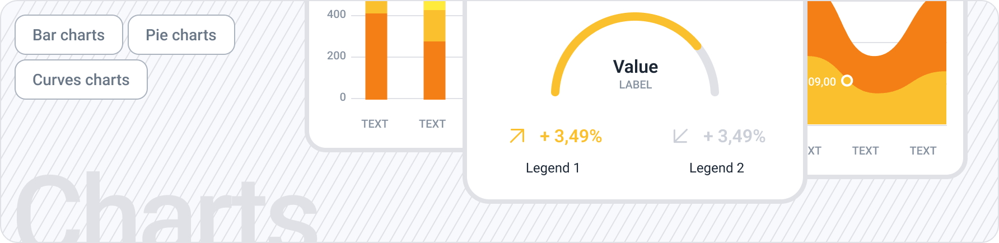
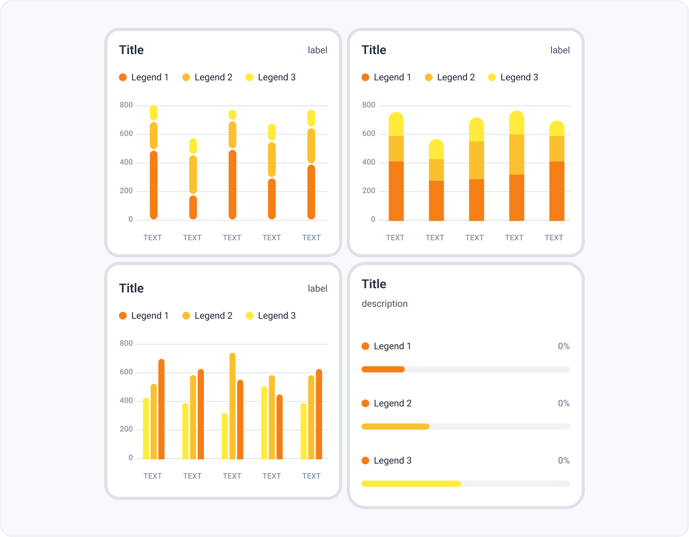
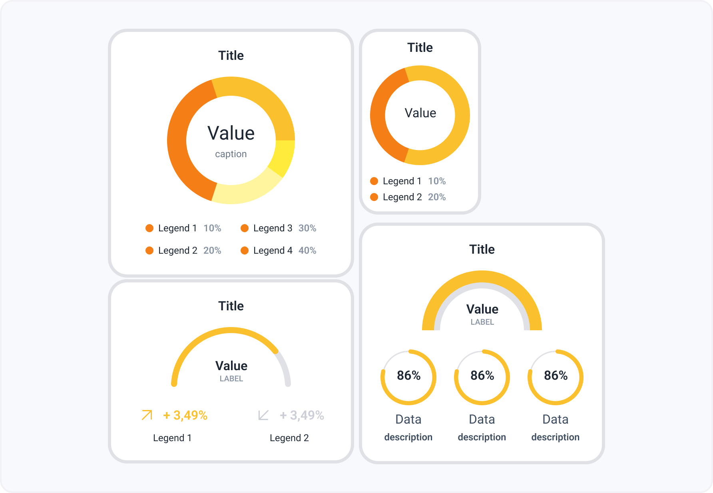

Графики
Графики наглядно отображают информацию об изменениях какого-либо показателя в динамике.
 Компонент в FigmaГистограммы
Гистограммы полезны для представления изменений данных с течением времени и для наглядного сравнения различных величин. В гистограммах категории обычно располагаются по горизонтальной оси, а значения — по вертикальной.
Круговые диаграммы
Круговые диаграммы обычно используются для сравнения групп. Круговые и кольцевые диаграммы, наряду с пирамидальными и воронкообразными диаграммами, относятся к группе так называемых фигурных диаграмм.
Графики
Диаграмма применяется для определения степени, с которой две числовые переменные влияют друг на друга. По оси х откладывается независимая переменная, а по оси y – зависимая переменная. Такая диаграмма может ответить на такие вопросы о ваших данных: какое отношение между переменными?